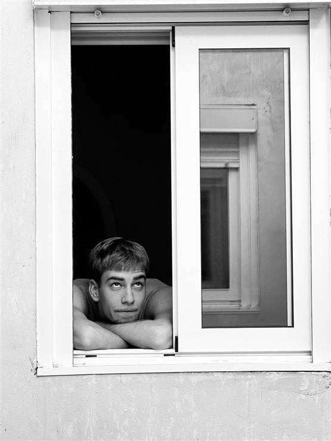
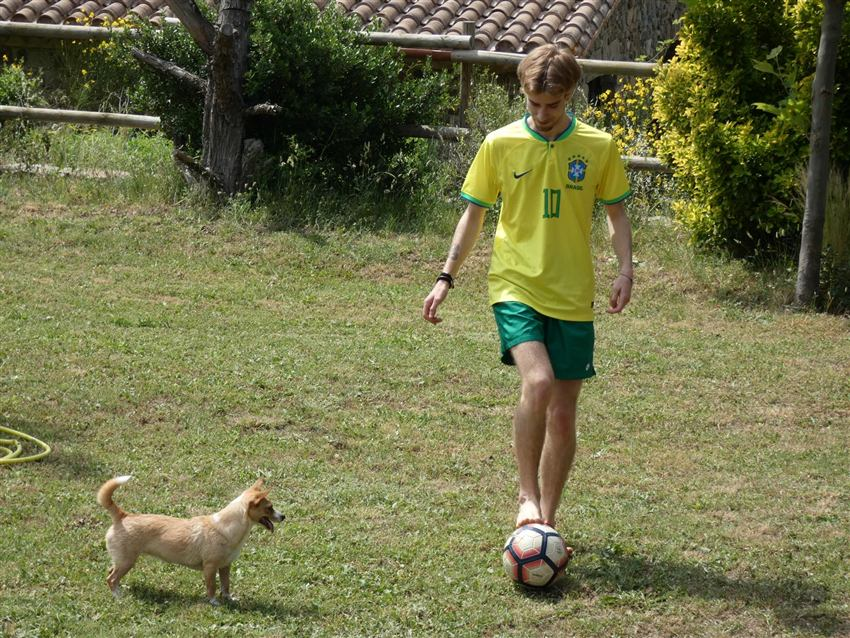
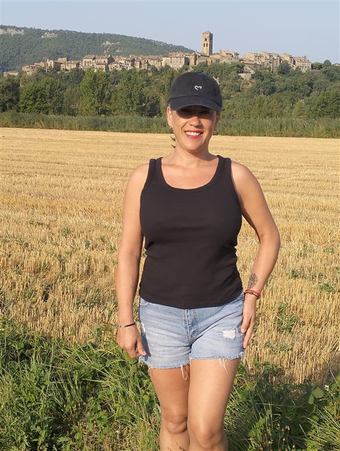
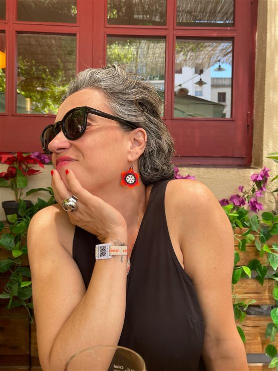
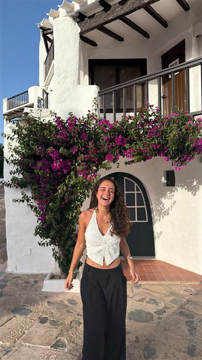
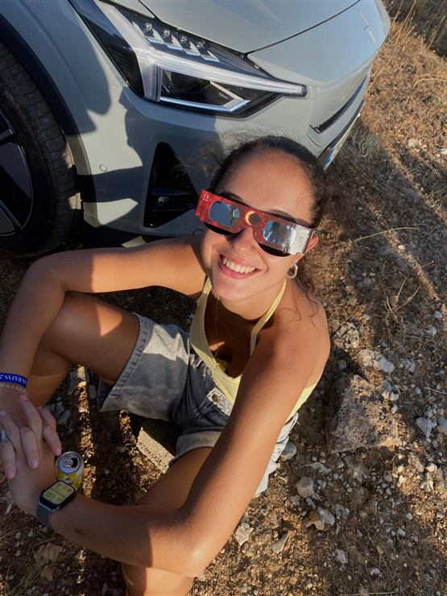
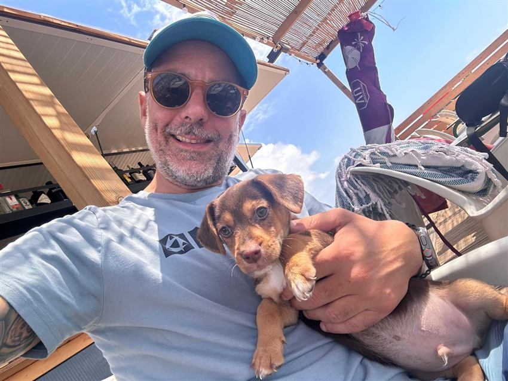
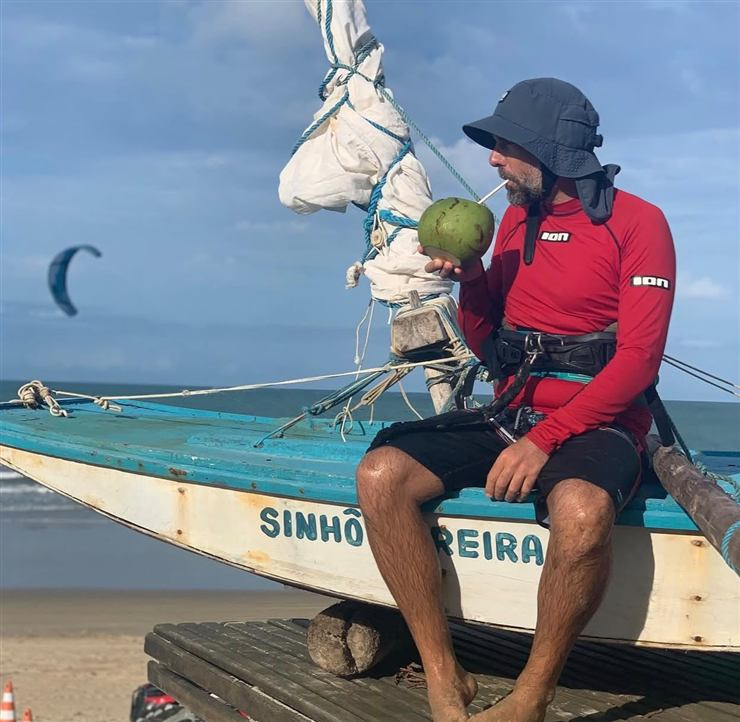

“Mi pareja”
Gonzalo Tortosa Pulido-21 años


Pulsa una flor de color para ver su postal.
«Hay flores que cuentan historias que las palabras no alcanzan a contar.»
El síndrome de Kleine-Levin es un trastorno poco frecuente. Se manifiesta en episodios en los que la persona duerme mucho más de lo habitual. También pueden aparecer desorientación y cambios en la forma de pensar o comportarse.
Los episodios suelen durar de unos días a varias semanas. Entre ellos, la persona suele recuperar su ritmo habitual de sueño y actividad. La causa del síndrome todavía se desconoce.
Durante mis episodios escribo y respondo menos. Aun así, hay personas que me siguen escribiendo. Sus mensajes son una forma de estar cerca cuando me cuesta participar en la conversación.
Por eso hice flores y postales. Son mi manera de agradecerles que sigan ahí y de regalarles algo que hable de ese acompañamiento.
Gonzalo Tortosa Pulido-21 años


Susana Castillo Raigón-48 años


Ana Gahete Aguilar-21años


Francisco Vargas Rodríguez-47 años


Diseño por determinar. Esta postal aún está en desarrollo.
Volver al jardínDiseño por determinar. Esta postal aún está en desarrollo.
Volver al jardínDiseño por determinar. Esta postal aún está en desarrollo.
Volver al jardínDiseño por determinar. Esta postal aún está en desarrollo.
Volver al jardín